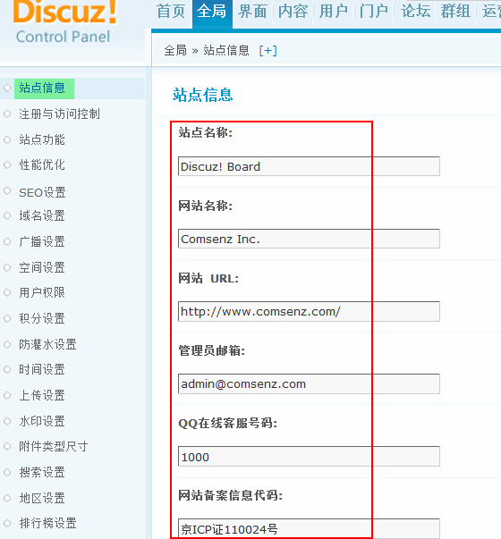
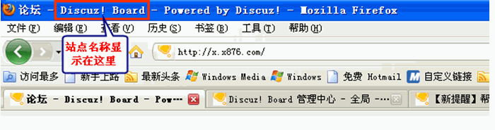
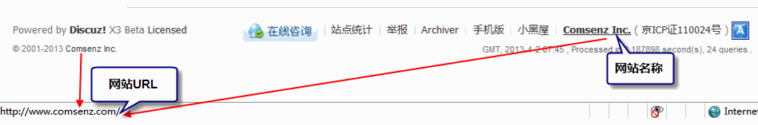
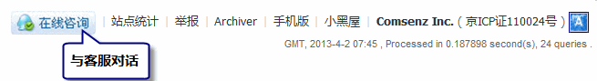
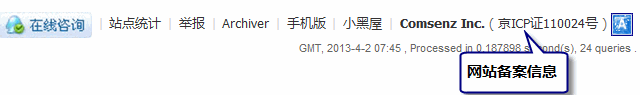
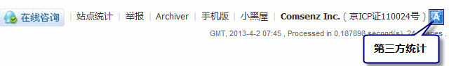
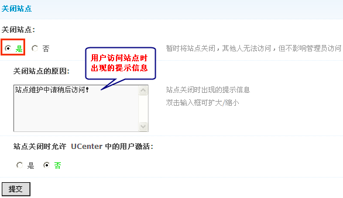
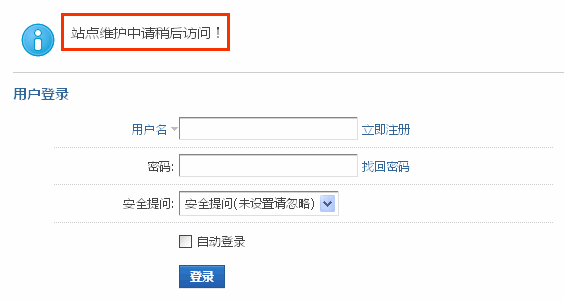

站点信息
应用场景：夏夏是一个新手站长，刚刚安装完我们的新版本 Discuz! X3 有好多的疑问：
问题1：她发现安装好后访问站点时，浏览器显示的站点名称，以及页面最下方（我们一般称为footer页面)显示的网站名称和网站访问地址等信息都是官方的，想改为自己的网站信息该怎么操作呢？
问题2：如果会员访问我的站点时遇到问题，想让会员直接联系在线 QQ 客服，能实现吗？
问题3：做论坛都是必须要有备案的，备案信息在哪填呢？
问题4：我还想在页面下方加上第三方统计信息，在哪里加呢？
问题5：站点刚安装好，内容都是0 ，我暂时不想让会员注册和访问，想先把版块建好了再开放站点，怎么操作呢？
答案就在这里：往下看
操作路径：【后台】=>【全局】=>【站点信息】中看到如下图所示的页面：
答案1：“站点名称”，设置之后将显示在导航条的标题中，效果如下：
网站名称即网站访问地址：设置之后将显示在页面底部。设置后效果如下图所示：
答案2：“QQ在线客服号码”：是Discuz! X3版本新增加的功能，直接在这里输入在线客服QQ号码即可实现用户与客服人员之间的对话。
注意：必须保证您的站点处于外网状态下该功能才有效。
答案3：“网站备案信息代码”，如果网站已备案在此输入您的授权码，它将显示在页面底部，如果没有请留空，设置后的效果如下图所示：
答案4：“网站第三方统计代码”，在这里可以将您在第三方网站申请到的统计代码复制进去。效果如下图所示：
答案5：“关闭站点”暂时将站点关闭，没有权限的会员将无法访问，只有在用户组里设置允许“超级访问”后才可以在站点关闭的情况下访问。
选择“是”后，没有超级访问权限的会员访问站点时，会显示如下图所示内容：
当您进行备份数据或者升级站点、站点搬家等操作时也必须关闭站点。
站点关闭时允许 UCenter 中的用户激活：用在当该站点关闭后，从其它应用注册的会员，访问站点是否允许激活的情况，如果选择“否”从其他应用注册的会员不允许激活，如果选择“是”则允许激活。
简单理解为：站点关闭的情况下，如果这个用户在 ucenter 中存在，但是不在论坛中存在的时候，是否可以直接激活。